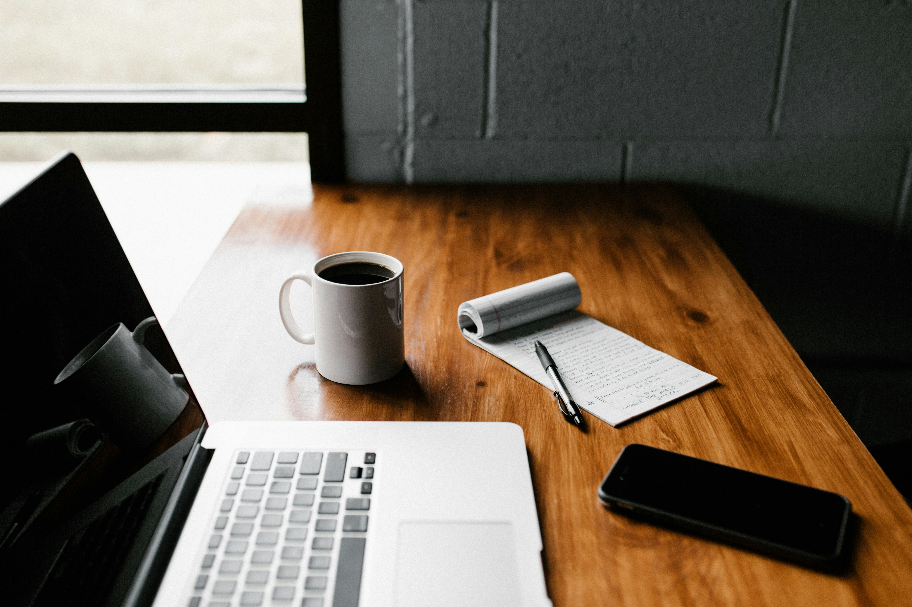

HAVEN JOURNAL
Stress i vardagen – varför återhämtning är viktigt
Upptäck hur stress påverkar kropp och sinne, och varför regelbunden återhämtning är nyckeln till balans, energi och inre närvaro.

Dagens tempo och stress
Vi lever i en tid där tempot aldrig verkar sakta ner. Mail, notiser, möten och krav på ständig prestation fyller våra dagar, ofta utan att vi ens hinner reflektera över det. Många känner en osynlig press att ständigt vara produktiva, effektiva och uppdaterade – samtidigt som kroppen och sinnet skriker efter vila.
Stress har blivit en vardagskompanjon, något vi nästan tar för givet. Men konsekvenserna är verkliga: sömnproblem, oro, trötthet, nedsatt koncentration och en känsla av att inte riktigt räcka till. För många blir det svårt att känna närvaro, lugn eller glädje i vardagen.
Men det finns en väg tillbaka. Att ge sig själv utrymme att andas, reflektera och ladda om är inte ett lyxigt tillval – det är en nödvändighet för att leva ett balanserat och hållbart liv. Den här artikeln är en inbjudan att förstå stressens påverkan, utforska återhämtningens kraft och hitta konkreta vägar för att skapa mer balans i din vardag.
Vad stress gör med kroppen och sinnet
När vi utsätts för stress aktiveras kroppens alarmberedskap, ofta kallad “fight or flight”-responsen. Kortisol och adrenalin pumpas ut i blodet, hjärtfrekvensen ökar och blodflödet styrs om från matsmältning till muskler. På kort sikt är detta livsviktigt – kroppen förbereder sig för att hantera en utmaning.
Men dagens stress är sällan fysisk. Istället är det kontinuerliga krav på jobbet, sociala medier, deadlines och intryck som håller kroppen i ett konstant “påslag”. När denna aktivering pågår under längre tid kan det leda till:
- Fysiska effekter: sömnproblem, huvudvärk, spänningar i nacke och rygg, nedsatt immunförsvar.
- Mentala effekter: svårt att koncentrera sig, minskad kreativitet, ökad irritabilitet, oro eller ångest.
- Emotionella effekter: känsla av otillräcklighet, låg energi, svårt att känna glädje eller närvaro.
Stress är alltså inte bara en känsla – det är en påverkan på hela kroppen och sinnet. Ju längre vi lever i ett tillstånd av konstant aktivering, desto större blir risken för utmattning, både fysiskt och psykiskt.
Att förstå dessa mekanismer är första steget mot att kunna bryta mönstret. Det är här återhämtning kommer in som en kraftfull motvikt – ett sätt att ge kroppen signaler om att det är säkert att slappna av och låta systemet återställa sig.
Återhämtningens roll
Återhämtning är mer än bara vila – det är kroppens och sinnets möjlighet att ladda om, reparera och återställa balans efter stress och påfrestningar. Utan medveten återhämtning fungerar vi på autopilot: vi blir trötta, distraherade och mindre närvarande i våra egna liv.
Återhämtning kan delas in i olika typer, alla viktiga för ett hållbart välmående:
- Fysisk återhämtning: Sömn, vila, promenader, yoga eller lätt träning. Det handlar om att ge kroppen tid att reparera och energiladda.
- Mental återhämtning: Pauser från arbetsuppgifter och information, meditation, reflektion eller en stund utan skärm. Här får hjärnan återgå till lugn och klarhet.
- Emotionell återhämtning: Tid för känslor, reflektion, att prata med någon man litar på, eller helt enkelt stunder av stillhet.
- Social återhämtning: Umgänge med människor som ger energi, eller medveten ensamhet för att reflektera och hitta balans.
Att regelbundet ge sig själv utrymme för återhämtning är alltså inte bara skönt – det är nödvändigt för långsiktig hälsa, kreativitet och närvaro. Det är också en förutsättning för att kunna möta livets krav utan att tappa energi, fokus eller balans.
Praktiska strategier för återhämtning
Att förstå vikten av återhämtning är ett steg – att faktiskt implementera det i vardagen är nästa. Här är några konkreta strategier som hjälper dig skapa balans och närvaro:
-
Mikropauser under dagen
- Stanna upp 1–5 minuter varje timme.
- Andas djupt, sträck på kroppen, känn in din omgivning.
- Små avbrott minskar stressnivån och ökar fokus.
-
Meditation och andningsövningar
- 5–15 minuter av medveten andning kan sänka puls och kortisol.
- Mindfulnessövningar, som att fokusera på ett ljud eller en känsla, hjälper hjärnan att släppa oro.
-
Natur och rörelse
- Promenader i grönområden eller skogen återställer energin snabbare än att sitta hemma.
- Lätt träning, yoga eller stretching frigör spänningar och ger både fysisk och mental återhämtning.
-
Sömn och återkommande rutiner
- Prioritera regelbunden sömn: samma tider varje natt skapar stabilitet i kroppen.
- Kvällsrutiner som minskar skärmtid och stress förbereder kroppen för vila.
-
Digital detox
- Bestäm tider då telefon, mail och sociala medier får vila.
- Korta stunder utan notiser eller skärmar minskar mental stress och ökar närvaro.
Små, medvetna handlingar varje dag gör större skillnad än sporadiska, längre pauser. Genom att införa dessa strategier skapar du en balans där kroppen och sinnet kan återhämta sig naturligt – utan att du behöver fly från vardagen.
Att skapa en återhämtningskultur i vardagen
Att planera in återhämtning behöver inte vara krångligt eller tidskrävande. Nyckeln är att göra det till en naturlig del av vardagen, inte ett extra moment som skapar stress.
Här är några sätt att skapa en kultur där återhämtning får plats:
- Planera in pauser: Sätt av fasta tider för korta mikropauser, promenader eller meditation varje dag.
- Små vanor ger stora effekter: Att ta 5 minuter för medveten andning eller reflektion kan ha större påverkan än sporadiska längre sessioner.
- Miljön spelar roll: Skapa platser i hemmet eller på jobbet där det är tillåtet att stanna upp och släppa stressen.
- Kommunicera dina behov: Låt andra veta när du behöver ostörd tid för återhämtning.
- Fira små framsteg: Känn igen och uppskatta de stunder du verkligen ger dig själv utrymme för vila och reflektion.
Genom att aktivt införa dessa små principer kan återhämtning bli en självklar del av vardagen. Kropp och sinne lär sig att den här tiden är viktig, och du bygger långsiktigt ett mer hållbart och balanserat liv.

Haven Nordic Health-perspektivet
På Haven Nordic Health ser vi återhämtning som hjärtat i ett hållbart liv. Vi erbjuder både kunskap och praktiska verktyg som hjälper människor att hitta balans, närvaro och energi i vardagen.
Våra metoder inkluderar:
- Digitalt innehåll: Artiklar, övningar samt shorts och reels inom återhämtning och närvaro.
- Coaching och samtalsstöd: Individuell vägledning för att förstå och hantera stress, skapa rutiner och bygga hållbara vanor.
- Retreat och fysiska upplevelser: I framtiden erbjuder vi retreats där kroppen och sinnet får maximal möjlighet att vila, återhämta sig och växa.
Vår vision är att varje person ska kunna skapa en vardag där återhämtning inte är ett undantag, utan en självklar del av livet.
Reflektera och dela
Ta några minuter att reflektera över hur du ger dig själv utrymme för återhämtning. Fundera på små steg du kan ta idag för att skapa mer balans, närvaro och energi.
Dela gärna artikeln med någon som behöver påminnas om vikten av återhämtning, eller sprid insikterna vidare på dina sociala medier.
Följ Haven Nordic Health på Instagram och Facebook för fler tips, artiklar och inspiration om återhämtning och balans i vardagen.